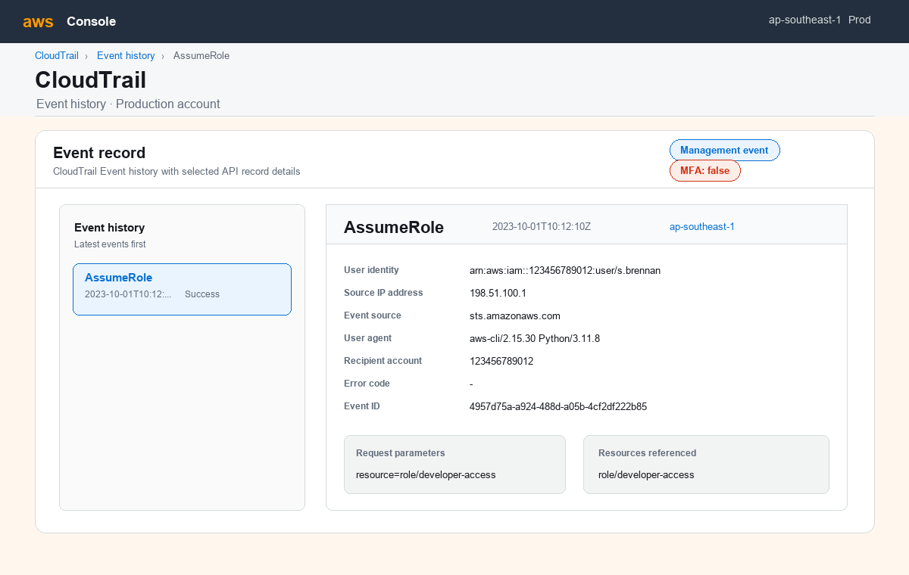
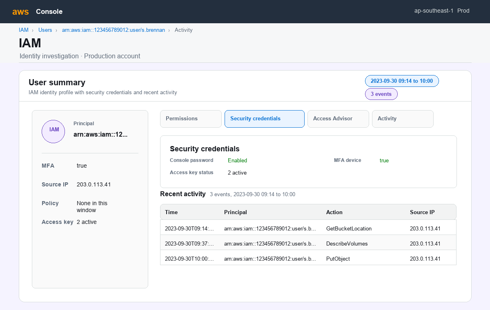
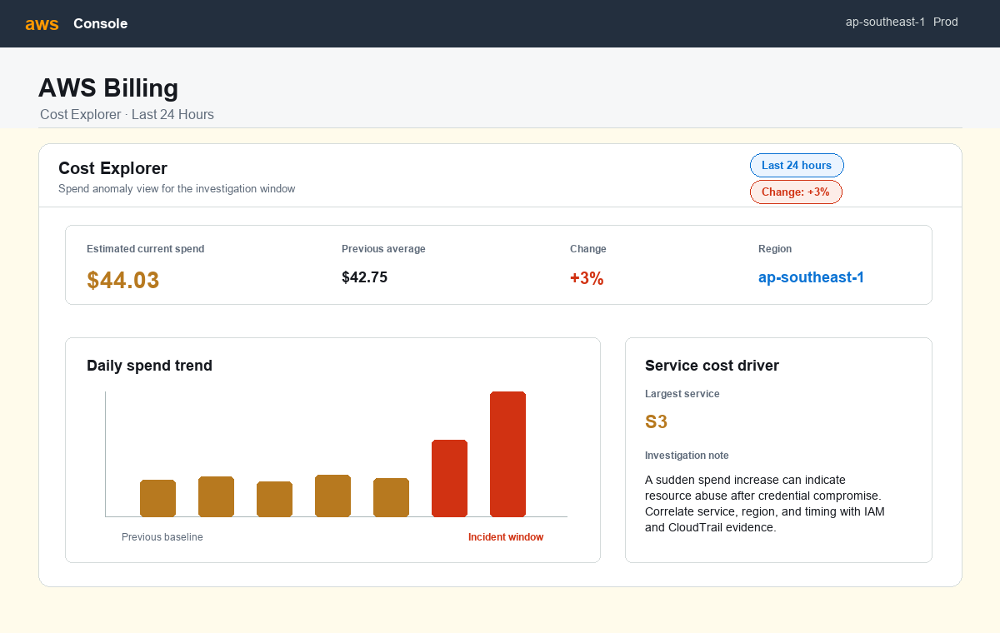

Choose an action
Three response actions. The coach asks questions, but it won't tell you which one is right.
Cloud incident response · five turns at a time
CloudIR Trainer is a hands-on simulator for cloud incident response. Pick a response, pick the screenshot that backs it, and say why. A vision model reads your evidence, a security model rates it, and your coach explains what it proved and what it didn't.
Continue where you left off
What is CloudIR Trainer?
CloudIR Trainer drops you into an AWS security incident and walks you through it one decision at a time. There are no multiple-choice answers to guess. Every response you choose has to be backed by a screenshot you can point to and an explanation in your own words, and three AI models running on your Mac check that the evidence really proves it.
A quiz asks
Which AWS service records API calls?
You can guess and still be right.
CloudIR Trainer asks
s.brennan called AssumeRole from 198.51.100.1. What do you do next, and what proves it?
Your action, your evidence and every statement you make are checked.
Students and early-career analysts who know the AWS basics and want practice making incident calls.
Reading CloudTrail, IAM, GuardDuty, CloudWatch, access-key and billing evidence, and saying what it proves and what it doesn't.
Each turn gets a Strong, Partial or Weak verdict against a marking scheme built for that turn, and each statement you make is checked for overclaiming.
A full incident response report: performance level, timeline, indicators, scorecard, recommendations and sign-off.
How a turn works
Every turn asks for a response action and the one screenshot that proves it. Then you say why, in writing or out loud, and three local models check your work.
Three response actions. The coach asks questions, but it won't tell you which one is right.
AWS-style screenshots of CloudTrail, IAM, GuardDuty, CloudWatch, access keys and billing.
Type your reasoning, or record it and let Whisper transcribe it. Name the fields you can see.
Vision reads the screenshot, Security rates the evidence, and the Coach explains the result.
The models
Each model has one job and its own character, so you always know who is working. Hover a card to watch it work.
Qwen/Qwen2.5-VL-3B-Instruct
Reads the evidence screenshot and lists the fields it can see. Also reads the architecture diagram when a case is built.
Apple GPU · bfloat16
fdtn-ai/Foundation-Sec-8B-Instruct · Q8 GGUF
Judges whether those facts support your action against a marking scheme built for each turn, then checks every statement you made.
llama.cpp with Metal · about 9–10 GB
Qwen/Qwen2.5-1.5B-Instruct
Turns the verdict into feedback, writes the next turn of the incident, and prepares your final debrief.
Apple GPU · float16
openai/whisper-base
Transcribes your spoken justification so you can check and edit it before you submit.
Runs locally · on request
The verdict
Turn 1 of the identity-management case, submitted with three different screenshots. These are the security model's own words.

Strong supportCloudTrail Event: AssumeRole
The selected evidence shows the AssumeRole call by s.brennan from 198.51.100.1, which is the exact step the decision this turn depends on.

Partial supportIAM Activity: s.brennan
The selected evidence shows related activities by s.brennan, including GetBucketLocation, DescribeVolumes, and PutObject, but it does not show the specific AssumeRole call that is the focus of the investigation.

Weak supportDaily Billing Summary
This evidence does not show the AssumeRole call by s.brennan from 198.51.100.1, which is the critical event under investigation.
The incident lifecycle
The coach writes each new turn from your last decision, so the incident moves with you from first signal to recovery.
One strong run · identity management
ACSE-Eval
Each case starts from an ACSE-Eval architecture and threat model. The vision model reads the diagram, the security model writes the incident timeline, and the coach writes Turn 1.
Runs on your Mac
Measured on a 24 GB Apple-silicon Mac. Models load one stage at a time and unload afterwards, and the interface calms its own motion while they run.
Ready when you are
ACSE-Eval dataset
Each case becomes a five-turn incident. Prepared cases start straight away.
The vision model reads this diagram while the case is built. You investigate the generated screenshots, not the diagram.
Building the case
This runs once per case. Prepared cases skip this screen.
Code step
Build stopped
Decision point
Pick the response you want to take. You'll back it with evidence in the next step.
Test Mode
Selects the intended best action for this turn so the test run follows the designed scenario path.
Coach
Evidence workspace
Select the screenshot that best proves your action.
Test Mode
Selects the intended strongest evidence for the current action before you continue to justification.
Coach
Your reasoning
Investigation prompt
Speech · whisper-base
Record your answer, then transcribe it. You can edit the text. 0.0 s
Test Mode
Fill a test transcript using the current action and evidence, then edit it if needed.
AI evaluation
Coach
Test Mode
This is the payload being sent through the real AI evaluation stream.
Tutorial
Eight stops, about three minutes. Each stop is a real screen with numbered markers. Hover or tap a step to find it on the screen.
Good to know
Test workspace
Resume an unfinished run, review its results, or start a new attempt from one of its checkpoints. Original results are kept.